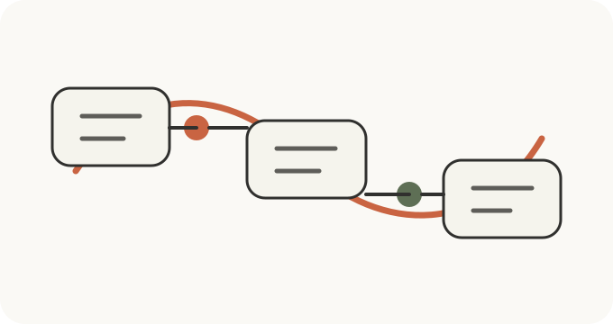

高通平台定制开发
基于高通芯片平台，为智能终端、行业设备和嵌入式产品提供定制开发支持。
关于我们
INNOSZ 隶属于深圳市千冲科技有限公司，专注于基于高通芯片平台的定制方案开发。我们服务于需要嵌入式系统、板级定制、Android/Linux 产品开发和技术外包支持的客户。
我们的协作方式很务实：先明确产品需求和可行路径，再围绕硬件、系统、驱动和产品验证推进项目落地。
服务内容
基于高通芯片平台，为智能终端、行业设备和嵌入式产品提供定制开发支持。
支持板级方案协作、硬件定制、原型验证以及面向产品落地的 PCBA 开发实现。
支持系统适配、外设集成、应用环境搭建以及软硬件协同工作。
提供 BSP 适配、接口 bring-up、外设驱动和产品级定制相关工程支持。
为硬件品牌、方案商、集成商和海外设备团队提供灵活的技术协作。
帮助客户以更轻量的方式获得嵌入式开发资源，降低自建团队成本与推进压力。
我们的优势
我们更擅长围绕客户项目需求提供定制支持，而不是单一标准品销售。
聚焦高通、Android、Linux、板级支持、驱动集成和产品适配等实际工程工作。
适合 IoT 团队、工业设备公司、智能硬件品牌和方案集成商。
合作流程

应用方向
工业终端、IoT 网关、智能显示设备、嵌入式 Android 产品、Linux 控制设备、OEM/ODM 设备和智能硬件定制项目。
联系我们
如果你正在寻找高通平台硬件开发、PCBA 定制或嵌入式 Android/Linux 产品开发合作伙伴，我们很乐意进一步交流。
公司名称深圳市千冲科技有限公司
品牌站点www.innosz.com
GitHub Pagesdannyfn.github.io
邮箱your-email@company.com
WhatsApp待补充